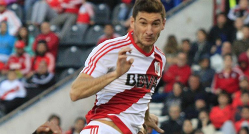

Real Chubut - Agencia de Noticias


River quiere estirar su invicto y meterse en cuartos ante Arsenal

River, que suma un invicto de siete partidos, se medirá esta noche ante Arsenal de Sarandí en San Juan con la ilusión de extender su racha positiva para avanzar a los cuartos de final de la Copa Argentina, cuyo título es prioridad para el club porque permitirá la clasificación a la próxima edición de la Copa Libertadores.
El encuentro, correspondiente a los octavos de final del certamen, se llevará a cabo en el estadio del Bicentenario de San Juan, a partir de las 20.30 con el arbitraje de Patricio Loustau. La televisación estará a cargo de Canal 3 de Cablevisión y 632 de DirecTV.
El equipo que resulte vencedor de este cotejo se medirá en la próxima instancia contra Unión de Santa Fe, que dejó en el camino a Estudiantes de La Plata, tras superarlo por 5-4 en los penales luego de igualar sin goles.
River tuvo un arranque exitoso en este segundo semestre de 2016 con sendas victorias en la Copa Argentina ante Rivadavía de Venado Tuerto (Federal B) por 3-0 y Estudiantes de San Luis (B Nacional) por 2-1. Y a eso le sumó el título de la Recopa Sudamericana frente a Independiente Santa Fe de Colombia (0-0 de visitante y 2-1 de local).
Pero por si fuera poco, también el equipo dirigido por Marcelo Gallardo mostró un alto rendimiento en el inicio del Campeonato de Primera División con triunfos ante Banfield (4-1) y Talleres en Córdoba (1-0), y sólo mermó un poco su nivel el último domingo cuando no pudo sostener la ventaja como local ante San Martín de San Juan y terminó igualando 1-1.
Enfrente estará Arsenal, que ya ganó la Copa en 2013, pero que está lejos de sus tiempos de gloria cuando supo ser campeón del fútbol argentino (Clausura 2012) y la Supercopa Argentina (2012), y también a nivel internacional con sus consagraciones en la Copa Sudamericana (2007) y la Suruga Bank (2008).
En la actualidad, a pesar de que logró la clasificación a octavos de este certamen tras eliminar aTalleres de Remedios de Escalada y Defensores de Belgrano (ambos de la Primera B Metropolitana y por 2-1), tuvo un mal comienzo en el Campeonato de Primera División con derrotas ante Sarmiento(1-0) y Atlético Tucumán (3-1) y empate frente a Temperley (1-1).
Así, después de mucho tiempo, el elenco de Sarandí mira de reojo la tabla de promedios porque si bien aún tiene 12 equipos por debajo, lo cierto es que serán cuatro los que perderán la categoría y la zona de peligro no está muy lejos.
Con miras al compromiso en tierras sanjuaninas, el DT de River incluyó en la lista de los que viajarán aMilton Casco, quien se recupera de una distensión muscular en el isquiotibial izquierdo y tras tener una buena recuperación, será probado en las próximas horas para ver si juega ante Arsenal o lo reservan para el domingo ante Defensa y Justicia.
De todas maneras, por lo observado en los entrenamientos, es muy probable que Gallardo repita a los 11 que fueron titulares en el estadio Monumental el domingo en el duelo ante San Martín de San Juan, en busca de conseguir otro resultado positivo para avanzar en esta Copa Argentina que siempre le fue esquiva.
Por el lado de Arsenal, el entrenador Sergio Rondina aún no definió el equipo pero se estima queLuciano Vella, ya recuperado de su dolencia, retornará a la titularidad en lugar de Leandro Marín, mientras que Julio Rodríguez (molestia en el pubis) y Gonzalo Bazán (dolencia en un tobillo) llegarían igualmente al trascendental cotejo frente al "millonario".
Publicado por: Real Chubut - Agencia de Noticias 22-09-2016 Deportes